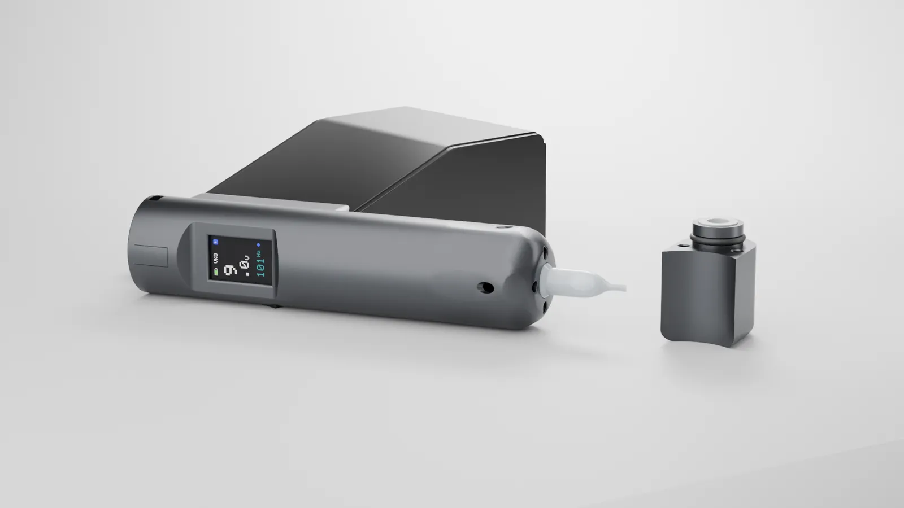

Es el final de una sesión cualquiera. La pieza ha quedado impecable, el cliente se va contento y, sobre la mesa, quedan cuatro o cinco vasos de tinta a medio usar. Todos van directos a la basura.
No es un descuido del artista. Es justo lo que exige la higiene con la forma de trabajar actual: la tinta sobrante de un tatuaje no se puede guardar ni devolver al bote. El problema es que, sesión tras sesión, esa tinta tirada se convierte en dinero, residuos y tiempo que ningún estudio recupera.
Por qué no se puede reutilizar la tinta de un vaso
En un estudio profesional, la tinta nunca se usa directamente desde el bote. Se sirve en vasos de un solo uso y la aguja se carga desde ahí. Es la forma de proteger el bote: si la aguja entrara en él, todo su contenido quedaría expuesto.
La consecuencia es clara. Una vez servida en el vaso, la tinta se considera contaminada: no puede volver al bote ni guardarse para el siguiente cliente, como recogen las guías de higiene y gestión de residuos del sector (Polymer Molding, Tatt Lab). Por eso cada cliente empieza con vasos y tinta nuevos, y lo que sobra se desecha al terminar.
La higiene no es negociable. Lo que sí se puede cambiar es cuánta tinta hay que tirar para conseguirla.
El «por si acaso»: por qué siempre se sirve de más
Si la tinta que sobra se tira, ¿por qué no servir menos? Porque quedarse corto a mitad de pieza es peor:
- Interrumpe el trabajo. Parar para servir un vaso nuevo rompe el ritmo, sobre todo en sombras y rellenos largos.
- Cada color es un vaso. Una pieza a color puede necesitar muchos vasos, y cada uno deja su sobrante.
- Las mezclas no se repiten igual. Si un tono mezclado se acaba, reproducirlo exactamente no es fácil.
El resultado es un hábito lógico que se repite en todos los estudios: servir «por si acaso» y asumir que una parte acabará en la basura.
Cuánto le cuesta de verdad a tu estudio
Un poco de tinta en cada vaso parece poca cosa. Multiplicado por los vasos de cada sesión, las sesiones de la semana y las semanas del año, deja de serlo. La cuenta es sencilla:
tinta tirada al año = vasos por sesión × sobrante por vaso × sesiones por semana × 48 semanas
Pon los datos de tu estudio en la calculadora y comprueba cuánto se va a la basura:
Calculadora de tinta sobrante
Los valores iniciales son solo un ejemplo: cámbialos por los de tu estudio. Mide durante una semana cuánto sobra en tus vasos para que el cálculo sea real.
Lo estamos midiendo. Durante el programa piloto del VK0 estamos registrando, con artistas y estudios reales, cuánta tinta se sirve y cuánta se usa en cada sesión. Publicaremos aquí los resultados. Si quieres participar, solicita tu plaza.
No es solo dinero: los residuos
Cada sesión genera residuos que no van a la basura normal: vasos con restos de tinta, guantes, papel y material manchado. En la mayoría de lugares se gestionan como residuo sanitario, con recogida y costes propios (PureWay). Consulta siempre la normativa de tu comunidad o municipio.
Cuantos más vasos y más sobrante, más residuos, más limpieza y más tiempo dedicado a tareas que no son tatuar. Si quieres profundizar en la parte de higiene, consulta nuestras preguntas frecuentes.
Qué puedes hacer hoy para desperdiciar menos
Mientras la forma de trabajar no cambie, hay hábitos que reducen el sobrante sin tocar la higiene:
- Planifica la paleta antes de empezar. Decide qué colores y cuántos vasos vas a necesitar según la pieza.
- Ajusta el tamaño del vaso a cada color. No hace falta la misma cantidad para un detalle que para un relleno.
- Sirve menos y repón con un vaso nuevo si hace falta. Nunca rellenes el vaso que estás usando.
- Mide durante un mes. Anotar lo que sirves y lo que sobra es la forma más rápida de detectar dónde se va la tinta.
- Forma a todo el equipo. En un estudio con varios artistas, una pauta común marca la diferencia.
El siguiente paso: tu tinta en su propio cartucho
Estos hábitos ayudan, pero no resuelven el origen del problema: mientras la tinta tenga que servirse en un vaso abierto, una parte acabará en la basura. Por eso en Vinko Solutions hemos diseñado y fabricado el VK0, la máquina de tatuaje de nueva generación:
- Tu tinta, en su propio cartucho. Lo llenas con la tinta que prefieras y va siempre con la máquina.
- Sin vasos ni sobrantes que tirar. La tinta deja de estar abierta sobre la mesa.
- Sin contaminación cruzada. Un tubo desechable nuevo en cada sesión.
- Menos preparación y menos limpieza. Más tiempo para tatuar.

Y queremos ir más allá: que las marcas de tinta puedan vender sus tintas ya envasadas en cartuchos, con la tinta regulada desde el origen. Puedes ver el VK0 pieza a pieza o descubrir el nuevo estándar.
Preguntas frecuentes
¿Se puede guardar la tinta que sobra en un vaso?
No. Una vez servida en el vaso y usada durante la sesión, la tinta se considera contaminada y debe desecharse al terminar. No se guarda para otro cliente ni para otra sesión.
¿Se puede devolver la tinta sobrante al bote?
No. Devolverla contaminaría todo el bote. Por eso la tinta se sirve en vasos de un solo uso y nunca se introduce nada en el bote.
¿Cuánta tinta se tira en un tatuaje?
Depende del estilo, del número de colores y de cuánto se sirva en cada vaso. Estamos midiéndolo con artistas reales en nuestro programa piloto y publicaremos los datos. Mientras tanto, puedes estimarlo con la calculadora de esta guía.
¿Cómo se desecha la tinta sobrante?
Los vasos con restos de tinta y el material manchado suelen gestionarse como residuo sanitario, separados de la basura normal. Sigue siempre la normativa de tu comunidad o municipio.
¿Hay alternativas a los vasos de tinta?
Sí. El VK0 de Vinko Solutions lleva tu tinta en su propio cartucho y usa un tubo desechable nuevo en cada sesión, así que no hay vasos abiertos ni sobrantes que tirar.
Deja de tirar tinta. Prueba el VK0.
Buscamos artistas y estudios que quieran trabajar con el nuevo estándar antes que nadie. Plazas limitadas.